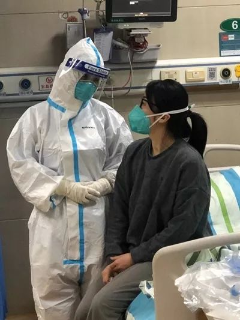

支援医院的武汉环卫工：每天工作16小时，处理300桶垃圾
原文链接 备份链接 ********** *****疫情暴发后的武汉，不止一家医院出现保洁人员紧缺的情况。在人手告急的情况下，江汉、江岸、汉南等多个区的城管部门采取行动，号召员工支援保洁工作。一批又一批环卫工人告别街头，开始忙碌在武汉市的 …

郭琴（右）与同事。受访者供图
作者 杨杰
编辑 从玉华
新冠肺炎康复后，武汉大学中南医院的护士郭琴复工了。“看我站在那里，病人心安。”郭琴在自己躺过的隔离病床前，护理新的病人，“我的出现，即使不说什么，也是鼓励。”
短短十几天，她由一名急诊护士变成患者，再回归医护队伍。再次穿起防护服时，郭琴的改变不可避免地发生了。
6号病床
很难确定病毒是从什么时刻找上郭琴的。1月12日下午，头疼，发冷。她下了夜班，一量体温，37.8摄氏度。
“我们1月7日开始穿防护服，此前还没有排查‘不明原因的肺炎’。”她可能在穿上防护服前被不知情的患者传染。
病毒也可能来自她穿上防护服后接触的6位确诊患者。采血、吸痰，都是高风险的暴露工作。一位53岁的姓胡的患者，从菜市场回家后接连高烧，转入中南医院急诊中心。郭琴把手伸进他的口腔，气管导管插进呼吸道，他的痰喷了出来，溅出粉色的泡沫。
看到体温计的数字后，郭琴立马隔离家人，通知单位，大量喝水，“当时往好的方向想，是不是甲流。”
第二天，体温一度升到39.5摄氏度。她验了血、做咽拭子检测，一看到是阳性，心凉了半截。当双肺毛玻璃样的CT结果出来时，医生下达指令，必须住院。
6号病床在一个两人的房间里，10平方米，没有窗户，白炽灯昼夜亮着。她在这张病床上护理过无数病人，也抢救过危重患者。这回，她第一次以的病人视角扫视曾经工作的地方。
“会联想到这张床上发生的不好的事情。”她想到那位原本健康的胡姓患者，竟要靠机器维持生命，“如果到了需要仪器支持的地步，你的生命直接托付给医疗团队，你无能为力。”她想到自己最坏的结果，想到病人痛苦的呻吟、呼吸频率加快、指甲因为缺氧而变干，不能一口气说出一句完整的话。
她给儿子发了一条信息，“自己能做的要多承担一些，爸爸一个人很辛苦。”她心里内疚，陪伴孩子的时间太少了。
夜晚在焦虑中度过，抢救仪器就在枕边，输液瓶滴滴答答到凌晨两点。原本与郭琴搭班的男徒弟，一个人在病房里穿行，监护仪报警声频繁响起。从晚上10点接班到第二天上午8点，脚步声没有停下来，不是平稳的步伐，而是急促的小碎步。
同事忙完，走到郭琴跟前，观察她的呼吸和睡眠。“曾经我也是这样无数次巡视病人，日日夜夜地坚持了15年，现在想想都不知道是怎么做到的。”
“如果我没有症状，就可以帮同事一下，他就没有那么辛苦。”同事来护理她，她很不好意思，她不能走动，需要喝水时，也不想过多麻烦他们。
“我终于理解了有些病人不忍打扰护士的心理，宁可自己憋着，也不跟护士说。”等她重返岗位时，添了主动询问病人需要的习惯。
“病人最需要的是重视，人一生病就变脆弱，渴望别人多陪伴。”郭琴说，“对轻症病人给予心理上的鼓励，重症病人有的神志不清楚，只能用一些音乐安抚。”
住院的第二天，连轴转的护士长抽空给郭琴送来早餐，郭琴讲着前一夜的观察，两人忍不住抱住痛哭。
“逃兵”
郭琴是武汉大学中南医院第一个感染的医护人员，同事们都在紧张地盯着她的变化。幸运的是，住院3天后，她的体温恢复正常。她腾出床位，开始回到父母家居家隔离。
父亲不大同意，每天问她，为什么待在家里？为什么不去医院打针？
知道郭琴感染了，邻居开始减少与她家人接触，母亲气不过，总是跟人说：“我女儿没什么，你们为什么要远离她？”
郭琴的先生与儿子在另一处隔离，儿子许久未见妈妈，只能看到手机屏幕上露出的一双眼睛。
以前孩子最喜欢问郭琴：“妈妈你今天上什么班？”她常年倒夜班，一旦在家，孩子总是特别开心。“他其实想说妈妈今天不上班才好。”听到要去上班的答案，儿子默默走开。
郭琴在家里隔离，看工作群里同事格外忙碌，大家讨论今天又收治了几个病人、讨论物资输送，讨论寄贺卡的小朋友。不论几点都有人在群里说话，好像没人休息、没人睡觉。
1月27日，郭琴的血液检测结果、核酸检测结果和CT都显示正常。护士长意外地收到了郭琴的微信：“护士长，了解到病房现在重患越来越多，大家压力也大……护士长看能不能请示一下，问问专家们不发烧几天后可以（工作），要是没大碍，我就来上班。”
父亲得知后有些不高兴，不愿意跟她说话。“好不容易没事了，还要再去，你在单位就是个员工，在家里父母就你一个孩子，儿子就你一个妈。”家人劝阻她。
她说服了家人：“我是第一个被感染的医护人员，也有其他同事病了，哪个家庭没有孩子，我现在要是不回去，我不知道算不算逃兵。”
欢迎归队
返岗那天，同事们一起为郭琴喊了口号，“欢迎归队！”然后穿着隔离服，一一拥抱。
“疫情留下很多思考，关于你和家人、关于同事之间、关于你和整个社会的关系，以及如何面对病人。”郭琴说。
郭琴又依次套上粉色贴身的手术衣、蓝色的隔离服、白色的防护服，戴上面屏与护目镜，套上两层手套和脚套。同事们在防护服外给彼此写名字，有的还写着“彭于晏”。
6号床又收进了新病人。得知郭琴是康复的新冠肺炎患者，病人们对她更信赖，围着她问“胸闷到底是什么导致的”“我今天喝的水够不够”。
病人们愿意看到她，仿佛她站在那里，就意味着一种治愈的希望。
一个感染的护士拿到确诊结果时，哭了。她向郭琴求助，“我该怎么办”。郭琴安慰她：“你看我不好好的嘛。”
医院里有了变化，走廊上贴着市民寄来的卡片，一个小学生用零花钱给他们买来午餐。还有人送鲜花、蛋糕、水果、煲仔饭。郭琴上班的第一天，交通停摆，警察敬了礼，送她到医院。同样充当护送者的，还有外卖小哥。
郭琴说自己爱感动，以前在急诊常遇到各种突发状况，一个两三岁的宝宝被货车撞伤，家人一分钱都掏不出来。病床那么大，他只有小小的一点，睁着眼睛，不哭不闹。她和几位同事看不下去，凑钱给孩子治疗。
她现在每天都会流泪，看到武汉封城的消息，哭了；一个志愿者护送了50多位病人，哭了；雷神山的工人连夜建医院，她也哭了，“工人很朴素，说想为国家做点事情，以后好跟孩子吹牛”。
如今，一天下来，她的防护服干了又湿，湿了又干，护目镜一片模糊。
一个40多岁的女病人，刚刚失去了父母，呼吸很差。她向郭琴倾诉，觉得自己的一生就要结束了。郭琴护理她、安慰她、陪伴她。经过治疗，她能下床走路了，还能跟家人视频。
儿子渐渐习惯隔着屏幕看到戴口罩的母亲，他把母亲写进作文里，那是“永远在说减肥，永远没有瘦下来的妈妈”。
武汉的街头呈现从未有过的安静，让人怀念起堵车的日子。医院人少了，受疫情影响，医护之间减少走动，在餐厅里也要分开进食。“等疫情过去，我最想做的是拥抱孩子，和朋友聚餐，跟同事拌嘴。”郭琴说。
那位吐出粉色泡沫痰的胡姓患者经过体外膜肺氧合（ECMO）治疗，重获健康。他出院那天，正是郭琴返岗的日子。
中国青年报·中青在线出品
微信编辑 | 陈轶男

觉得好看请点这里
原文链接 备份链接 ********** *****疫情暴发后的武汉，不止一家医院出现保洁人员紧缺的情况。在人手告急的情况下，江汉、江岸、汉南等多个区的城管部门采取行动，号召员工支援保洁工作。一批又一批环卫工人告别街头，开始忙碌在武汉市的 …
原文链接 备份链接 “听武汉这边的同事说，每年的3到4月，这里的樱花开得非常漂亮，到时我们一起来看樱花啊？” “一定一定！” 配图 | golo 前 言 这是一场战争，在新年的伊始，爆发在每一个普通的、平凡的中国人身边。 这是我们的战争， …
原文链接 备份链接 伴随着火神山、雷神山医院开始收治病人，15家方舱医院陆续启动， 各省医疗队开赴武汉，武汉所有确诊患者与疑似病例都将“应收尽收”。 在人类抗击疫病的历史上，“武汉会战”已成为一场史无前例的超级行动 图/新华、中新 武汉 …
原文链接 备份链接 文｜备备 最近，多起因病患隐瞒自身病情或接触史导致大规模感染的新闻让人们对出门和返工多了几分担忧。医院之外，还有更多从事着不同职业的人正在各自的岗位上维持着乡村和城市的疫情防控。大军是一位90后刑警，进入警队近四年，这 …
原文链接 备份链接 澎湃新闻记者 朱莹 钟笑玫 明鹊 实习生 刘昱秀 李振东与病魔斗争了16天后终于治愈出院，他希望自己的经验能给病友提供借鉴。记者：闫海龙 魏凡 编辑：曾怡文 视频来源：澎湃新闻(04:53) 这个冬天，新冠肺炎疾风般席 …